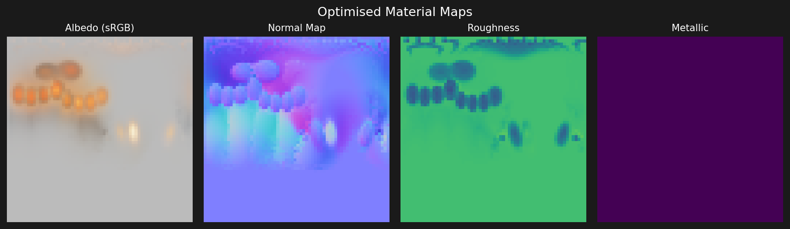

Inverse rendering
My contribution
I implemented a differentiable Cook–Torrance renderer in PyTorch, evaluated held-out views over fixed splits, and ran a pre-designed identifiability study.
Research implementation
Fits synthetic training renders (normalised error 0.15) but not held-out views (0.76, where 1.0 is a black image); material maps are not reliably identified.
Problem
Whether spatially-varying surface material properties (albedo, normal, roughness, metallic) can be recovered by optimisation from multi-view renderings, and which of them the observations actually identify. All images are synthetic renderings of a known ground-truth material on a sphere.
Approach
A pure-PyTorch differentiable renderer implements the Cook-Torrance BRDF (GGX normal distribution, Schlick Fresnel, Smith geometry term), optimising material maps via gradient descent against reference views, with no external differentiable-rasterisation library. Held-out views are evaluated over fixed splits (leave-one-view-out and others, 3 seeds), and a controlled identifiability study, designed before any result, varies the number and diversity of views and lights and fixes selected parameters to the truth. Gradients are verified against float64 finite differences.
Result
The optimisation fits the training renders but generalises poorly: in leave-one-view-out evaluation the normalised error (MSE relative to the mean squared reference, where 1.0 is the error of a black image) is 0.15 on training views and 0.76 on held-out views, on average no better than the untrained initialisation. The recovered maps do not match the ground truth: metallic does not move from its initial value and the normals tilt by 18° although the true normals are flat. With a better-conditioned loss and 72 diverse observations (three elevations, three lighting rigs), the error on fresh test observations falls to 0.13 and the metallic error to 0.17, but the normals are still only partly identified (mean error 6.9°); with the normals fixed to the truth, the other maps are recovered.
Limitations
An inverse crime by construction: the reference images are rendered, without noise, by the same renderer, mesh and texture parameterisation that are optimised, so the results say nothing about photographs. One synthetic sphere with a smooth material and flat normals; the original setup has 8 views on one camera ring and one light rig.

